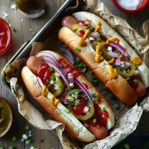
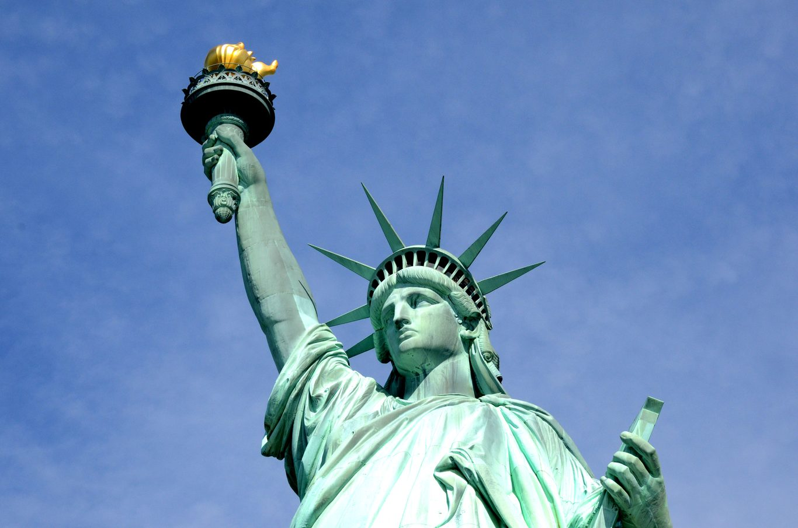
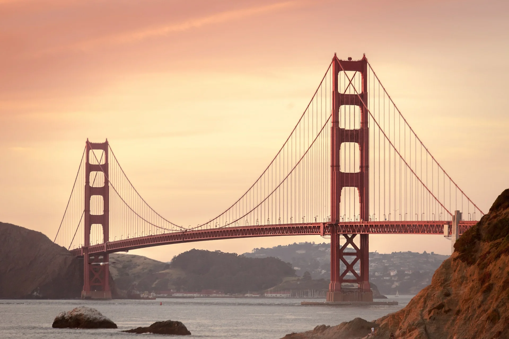
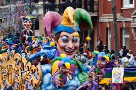
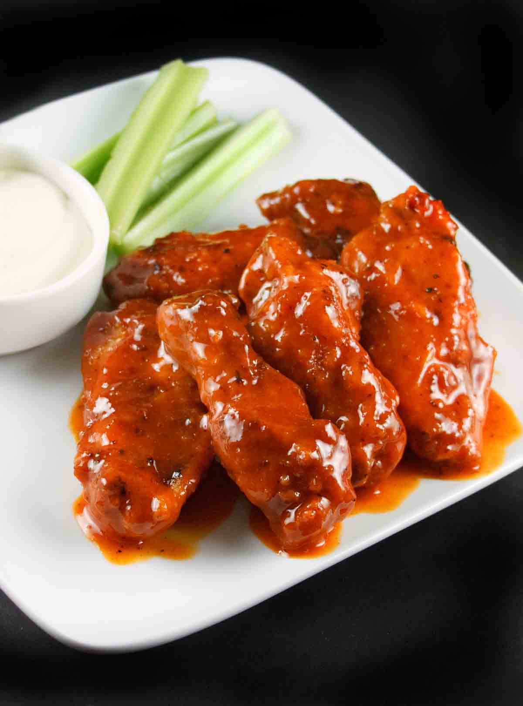
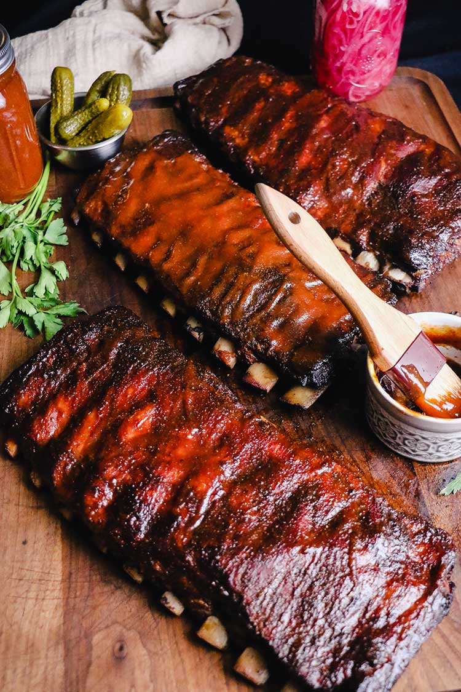
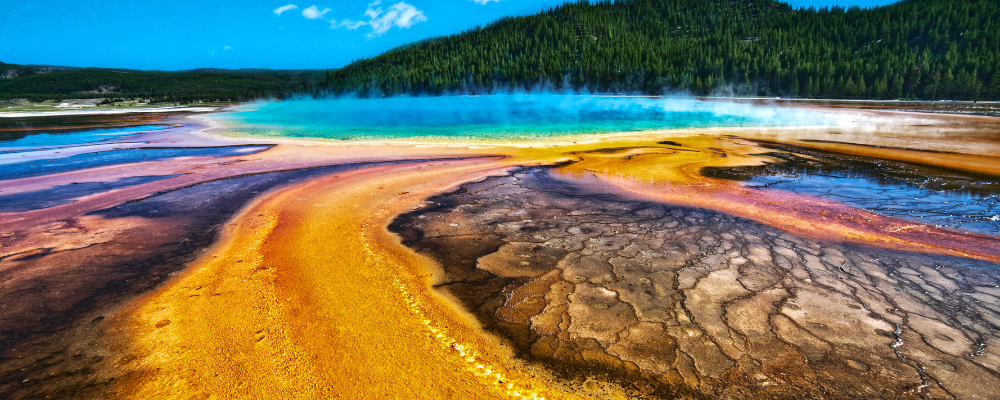

About USA
The United States of America is a large federal republic located in North America. It has 50 states, a federal district, and several territories. The country features busy cities like New York City and Los Angeles, as well as stunning natural sites like the Grand Canyon. The US is known for its varied geography and serves as a leading economic and technological power. This creates exciting job opportunities and a vibrant mix of cultures.
Capital
Washington, D.C.
Language
English
Currency
$ USD
Time Zone
UTC -5 to -10
Important Festivals
See all →Independence Day
Celebrates the independence of the United States with fireworks, parades, concerts, and family gatherings.

Thanksgiving
Families gather to enjoy a traditional meal and give thanks.
Famous & typical Food
See all →
Hamburger
Beef burger served in a bun.

Hot Dog
Sausage served in a bread roll.
Top landmarks & cities
See all →
Statue of Liberty
Symbol of freedom and one of America's most famous landmarks.

Golden Gate Bridge
Famous suspension bridge over San Francisco Bay.
Thinking of moving to USA?
Moving to the US provides access to great job growth, high earning potential, top-notch education, and unmatched personal freedom. However, relocating here means dealing with a complicated immigration system, adjusting to high healthcare and living costs, relying mostly on personal cars in many cities, and getting used to a fast-paced workplace with limited social safety nets.
Visit Official agency ↗Events & Festivals
The American calendar showcases a blend of civic pride, holiday traditions, sports events, and cultural diversity. Major national celebrations like Independence Day and Thanksgiving unite communities across all states. Notable events such as Mardi Gras, the Super Bowl, and Halloween highlight the country's energetic entertainment spirit and regional heritage.
All festivals
Independence Day
4th of JulyA national holiday that celebrates the declaration of US independence in 1776. It features patriotic parades, family backyard barbecues, outdoor concerts, and large fireworks displays in towns and cities across the country.
Thanksgiving
Fourth Thursday of NovemberThis holiday takes place on the fourth Thursday of November. It focuses on gratitude, family reunions, annual football games, national parades, and traditional feasts with turkey, stuffing, and cranberry sauce.

Mardi Gras
February or MarchThis lively carnival celebration happens before Ash Wednesday, most notably in New Orleans. It includes colorful street parades, elaborate costumes, jazz music, throwing beads, and enjoying King Cake.
Super Bowl
FebruaryThe annual championship game of the National Football League takes place in early February. It serves as an unofficial national holiday, celebrated with watch parties, commercial debuts, and star-studded halftime shows.
Halloween
31st of OctoberThis festive holiday allows children and adults to dress up in creative costumes, go trick-or-treating in decorated neighborhoods, carve pumpkins into jack-o'-lanterns, and visit haunted attractions.
Christmas
25th of DecemberCelebrated on December 25th, this major holiday features festive light displays, Christmas trees, gift exchanges, winter parades, and family gatherings. It serves as both a religious observance and a significant cultural season.
Culture
American culture emphasizes individualism, self-reliance, straightforward communication, and merit-based achievements. Influenced by centuries of immigration, it acts as a vibrant cultural melting pot where entrepreneurial spirit meets diverse local traditions. Social life values personal freedom, community involvement, casual friendliness, and a strong work ethic, balanced with sports, entertainment, and outdoor activities.
Values & Customs
American customs highlight personal freedom, equal opportunity, and individual success. People take pride in being self-reliant, sharing their opinions freely, and maintaining informal, open interactions in social and professional settings.
Individualism Meritocracy Capitalism
Art & Traditions
Artistic expression is heavily driven by mass media, storytelling, and innovation. From Hollywood filmmaking and Broadway theater to iconic musical genres like jazz, blues, and rock, American pop culture has a significant global impact.
Hollywood Pop Culture Jazz & Rock Sports
Religion
The US Constitution ensures complete freedom of religion, resulting in a pluralistic society. While largely influenced by Christian traditions, modern American cities welcome diverse multi-faith communities alongside a growing secular population.
Pluralism Christianity
Etiquette
Social etiquette favors casual friendliness, direct eye contact, and respect for personal space. Tipping service staff, typically 15-20% at restaurants, is a common social custom. Professional introductions usually involve a firm handshake.
Directness Tipping Culture Handshake
Food
US food culture is a rich blend of native ingredients, local traditions, and immigrant influences. Dining options range from famous street foods like hot dogs and bagels to regional specialties such as Southern barbecue, Tex-Mex, and fresh seafood. Classic American comfort food focuses on big portions, rich flavors, and beloved desserts enjoyed in casual diners or upscale restaurants.
Famous Dishes
Hamburger
The ultimate American comfort food, featuring a grilled beef patty topped with lettuce, tomato, cheese, pickles, and condiments, served inside a toasted bun with French fries.
Hot Dog
A popular street food staple made with a grilled or steamed sausage in a sliced bun, topped with mustard, ketchup, relish, onions, or sauerkraut, commonly enjoyed at sports events.
Apple Pie
A classic double-crust dessert filled with spiced, cinnamon-dusted sliced apples baked until tender. Served warm, it is often paired a la mode with a scoop of vanilla ice cream and is seen as a national symbol.

Buffalo Wings
Crispy deep-fried chicken wings tossed in a spicy, butter-based cayenne pepper sauce, traditionally served with celery sticks, carrot sticks, and cool blue cheese or ranch dipping sauce.

Barbecue Ribs
Tender pork or beef ribs coated in dry spice rubs and slow-cooked over wood smoke for hours until they are fall-off-the-bone tender, brushed with sweet or tangy regional barbecue sauces.
Mac and Cheese
A creamy, comforting casserole made of tender elbow macaroni coated in a rich cheese sauce, usually cheddar, often baked with a golden, crispy breadcrumb topping.
Pancakes
Classic breakfast food made of fluffy, round griddled batter cakes served stacked high, topped with a pat of butter, and drizzled generously with warm maple syrup.
New York Cheesecake
A dense, smooth, and rich dessert made with cream cheese, eggs, and sugar over a buttery graham cracker crust, often served plain or topped with fresh strawberry sauce.
Weather
Because of its vast size, the US has nearly every major climate type. The Northeast and Midwest experience four distinct seasons, with snowy winters and warm summers. The South has humid subtropical weather. The Southwest features hot, dry deserts, while the Pacific Northwest offers mild, oceanic conditions with frequent rain.
Montly Overview (National Average)
To be mindful of
Best Time
April - JuneSpring offers mild weather, blooming landscapes, and moderate travel costs across most states. It provides a suitable climate for walking city neighborhoods, visiting job or university campuses, and house hunting comfortably before the summer heat arrives.
Be wary: ornado & Severe Weather Season in Central US
April - JuneThe Midwest and Central Plains, known as "Tornado Alley", face high risks of severe thunderstorms, hail, and unpredictable tornadoes during late spring. This weather can disrupt road travel and local municipal operations.
Be wary: Atlantic Hurricane Season
August - OctoberSevere tropical storms and hurricanes affect the Southeast and Gulf Coast states, such as Florida and Texas. These storms can cause significant travel delays, coastal flooding, power outages, and mandatory evacuations during peak autumn months.
Be wary: Winter Freeze & Lake-Effect Snow
January - FebruaryHeavy snowstorms, sub-zero blizzards, and freezing ice disrupt transportation in northern states, the Midwest, and the Northeast. Flights experience severe delays, highway travel becomes dangerous, and exploring cities outdoors becomes challenging.
Landmarks
The US boasts famous natural wonders and iconic man-made structures. From historical sites like the Statue of Liberty and the Washington Monument to architectural landmarks like the Golden Gate Bridge and the vibrant energy of Times Square, the landscape connects rich history with modern urban life and expansive wilderness areas like Yellowstone.
Statue of Liberty
New York CityA historic colossal copper statue on Liberty Island in New York Harbor. Gifted by France in 1886, it represents an enduring global symbol of freedom, democracy, and welcome for newcomers.
Grand Canyon
ArizonaA breathtaking natural gorge carved by the Colorado River in Arizona. It spans over 277 miles, and its layered red rock formations showcase millions of years of geological history and attract visitors from around the world.
Golden Gate Bridge
San Francisco, CaliforniaAn iconic orange suspension bridge crossing the mile-wide strait between San Francisco Bay and the Pacific Ocean, known for its Art Deco design and views shrouded in fog.

Times Square
New York CityA bustling commercial and entertainment hub in Midtown Manhattan, renowned for its large illuminated LED billboards, historic Broadway theaters, street performers, and vibrant 24/7 city life.
Washington Monument
Washington, D.C.A towering 555-foot marble obelisk on the National Mall in Washington, D.C., built to honor the nation's first president, George Washington, and is a key part of the capital's skyline.

Yellowstone National Park
WyomingThe first national park in the world, situated mainly in Wyoming. It is known for its rich wildlife, dramatic canyons, sub-alpine forests, and unique geothermal features, including the famous Old Faithful geyser.
Immigration
The US immigration system provides both temporary and permanent options aimed at work, family reunification, investment, and specialized skills. However, gaining long-term status can be challenging due to strict quotas, long waiting periods, and detailed documentation requirements.
Department of immigration
To learn about official visa categories, check green card eligibility, or monitor petition processes, prospective migrants should visit the official government site: USCIS.gov (U.S. Citizenship and Immigration Services) or the Department of State's website.
Visit Official agency ↗Common visa types
⚠️Always check with the corresponding official agency. This table might not be up to cardTag and different rules apply to different origin countries.
| Visa type | Duration | Processing time | Notes |
|---|---|---|---|
| Tourist (B1/B2 Visa) | Up to 6 months | 2-12 weeks (or Instant via ESTA) | |
| Work Visa (H-1B, L-1, O-1) | 3 to 6 years | 2-6 months | H-1B subject to an annual lottery. L-1 covers intra-company transferees. |
| EU / Global Talent (O-1 / EB-1) | 3 years (O-1) / Permanent (EB-1) | 1-4 months | For individuals with extraordinary ability in sciences, arts, education, business, or athletics. |
| Student Visa (F-1 / M-1) | Duration of study | 2-8 weeks | - |
| Family Reunification | Permanent | 12-36 months | Only US citizens and Permanent Residents can sponsor |
| Investor Visa (EB-5 / E-2) | 2-5 years (E-2) / Permanent (EB-5) | 6-24 months | Requires substantial capital investment into a US business |
| Permanent Residence (Green Card) | Permanent | 1 to 5+ years | Employment-based (EB-1/EB-2/EB-3) or family-based immigrant visas conferring full legal residence. |
| Digital nomad | - | - | The US does not offer a Digital Nomad Visa. Remote work for foreign clients while on tourist status occupies a legal gray area. |